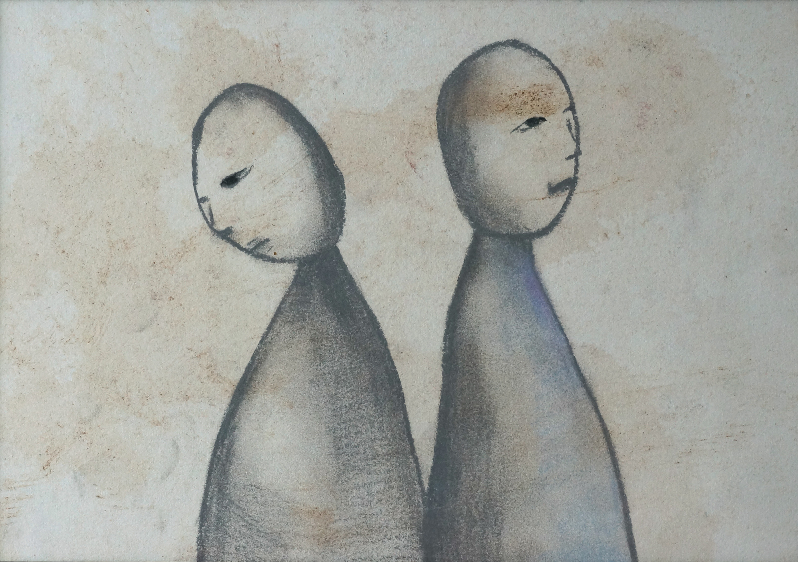

전시회 책을 떠난 생각들, 문장으로부터 온 기억들 Ideas left books, memories from sentences 은 김보람의 2번째 개인전시이다.

책이 재미있는 것은 각각의 우주인 사람에게 다가가는 문구와 환기시키는 기억이 다르다는 점이다. 또 책은 하나의 컨텐츠로 많은 사람들이 소통할 수 있는 도구가 된다. 이번 전시는 작가가 세 권의 책 <나뭇잎 사이로 비치는 햇살 속을 헤엄치는 물고기>, <철학자와 늑대>, <어린 왕자>를 통해 느꼈던 여러 가지 감정들과 기억들을 펼쳐내는 전시이다. 책읽기와 드로잉은 작가에게 일기를 쓰는 행위와 같다. 매일을 정리하며 책을 읽고, 그날의 감정과 생각들을 연결하여 표현하는 것이 하루를 마무리하는 의식과 같은 것이다. 작가의 작품들은 나 아닌 대상들과의 시간, 관계, 기억의 왜곡 등을 주제로 하고 있다. 이 전시를 본 많은 사람들이 문장으로부터, 또 작가의 드로잉으로부터 각자의 에피소드와 기억들을 나누었으면 한다.